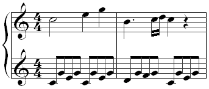

Music is a form of art; an expression of emotions through harmonic frequencies. Music is also a form of entertainment that puts sounds together in a way that people like, find interesting or dance to. Most music includes people singing with their voices or playing musical instruments, such as the piano, guitar, drums or violin.
The word music comes from the Greek word (mousike), which means "(art) of the Muses". In Ancient Greece the Muses included the goddesses of music, poetry, art, and dance. Someone who makes music is known as a musician.
Definition of music
Music is sound that has been organized by using rhythm, melody or harmony. If someone bangs saucepans while cooking, it makes noise. If a person bangs saucepans or pots in a rhythmic way, they are making a simple type of music.
There are four things which music has most of the time:
⋄Music often has pitch. This means high and low notes. Tunes are made of notes that go up or down or stay on the same pitch.
⋄Music often has rhythm. Rhythm is the way the musical sounds and silences are put together in a sequence. Every tune has a rhythm that can be tapped. Music usually has a regular beat.
⋄Music often has dynamics. This means whether it is quiet or loud or somewhere in between.
⋄Music often has timbre. This is a French word (pronounced the French way: "TAM-br"). The "timbre" of a sound is the way that a sound is interesting. The sort of sound might be harsh, gentle, dry, warm, or something else. Timbre is what makes a clarinet sound different from an oboe, and what makes one person's voice sound different from another person.
Musical notation

"Musical notation" is the way music is written down. Music needs to be written down in order to be saved and remembered for future performances. In this way composers (people who write music) can tell others how to play the musical piece as it was meant to be played.
Solfège
Solfège (sometimes called solfa) is the way tones are named. It was made in order to give a name to the several tones and pitches. For example, the eight basic notes "Do, Re, Mi, Fa, So, La, Ti, Do" are just the names of the eight notes that confirm the major scale.
How to enjoy music
By listening
People can enjoy music by listening to it. They can go to concerts to hear musicians perform. Classical music is usually performed in concert halls, but sometimes huge festivals are organized in which it is performed outside, in a field or stadium, like pop festivals. People can listen to music on CDs, Computers, iPods, television, the radio, cassette/record-players and even mobile phones.
There is so much music today, in elevators, shopping malls, and stores, that it often becomes a background sound that we do not really hear.
By playing or singing
People can learn to play an instrument. Probably the most common for complete beginners is the piano or keyboard, the guitar, or the recorder (which is certainly the cheapest to buy). After they have learnt to play scales, play simple tunes and read the simplest musical notation, then they can think about which instrument for further development. They should choose an instrument that is practical for their size. For example, a very short child cannot play a full size double bass, because the double bass is over five feet high. People should choose an instrument that they enjoy playing, because playing regularly is the only way to get better. Finally, it helps to have a good teacher.
By composing
Anyone can make up his or her own pieces of music. It is not difficult to compose simple songs or melodies (tunes). It's easier for people who can play an instrument themselves. All it takes is experimenting with the sounds that an instrument makes. Someone can make up a piece that tells a story, or just find a nice tune and think about ways it can be changed each time it is repeated. The instrument might be someone's own voice.
 home
discover
radio
home
discover
radio